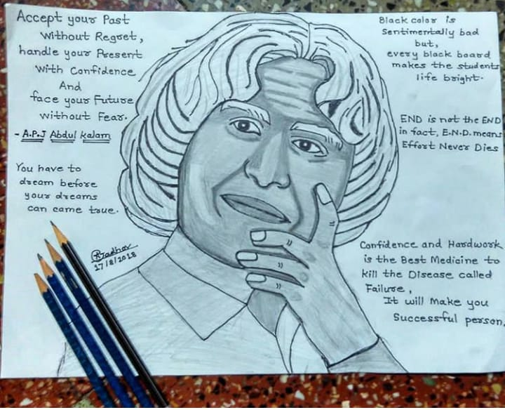

Abdul Kalam, in full Avul Pakir Jainulabdeen Abdul Kalam, (born October 15, 1931, Rameswaram, India—died July
27, 2015, Shillong), Indian scientist and politician who played a leading role in the development of India's
missile and nuclear weapons programs. He was president of India from 2002 to 2007.
Born: October 15, 1931 Rameswaram India
Died: July 27, 2015 (aged 83) Shillong India

insipiring quotes of APJ
"You have to dream before your dreams can come true.” - APJ Abdul Kalam.
"Dream, dream, dream. ...
" 'Dream is not the thing you see in sleep but is that thing that doesn't let you sleep." - APJ Abdul
Kalam.
"Great dreams of great dreamers are always transcended.”